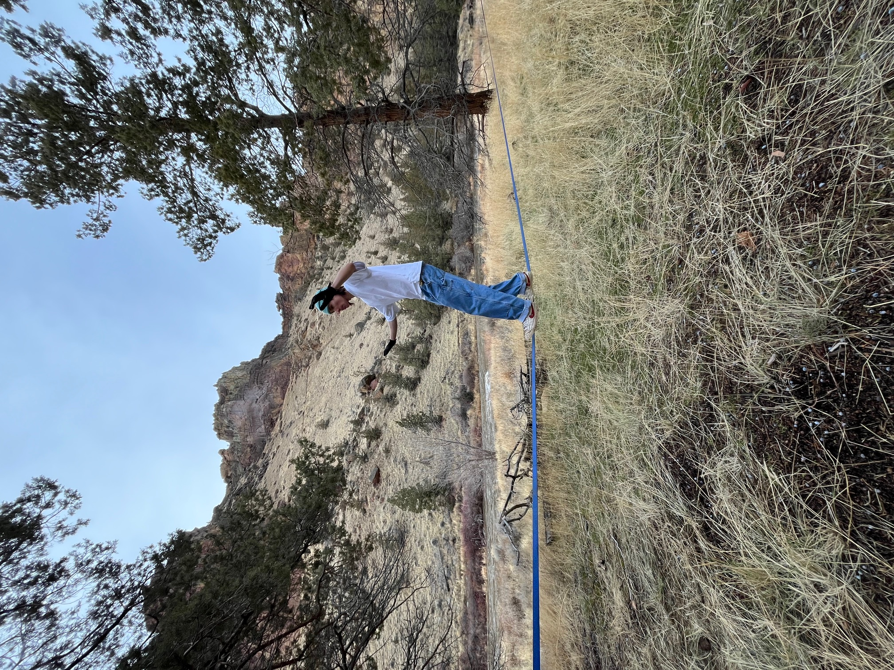

Hobbies
Skiing
I have loved skiing ever since I was 4, and go up to the mountains as much as I can, and in the last 4 years I averaged around 45 days a season.

Rock Climbing
I have been climbing avidily for the past 3 years. I started climbing indoors, and got outdoor climbing equipment 2 years ago. Now that I live in WA, I have to climb indoor a lot more.


Slackline
I started slacklining in September when I moved up here to bham. I hope to progress to highlining some day.
